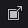
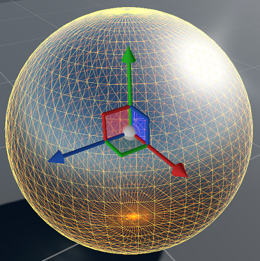
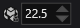
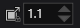

Manage entities
Warning
Приносим свои извинения за неудобства. Для этой страницы нет перевода на русский язык. Она будет отображаться на английском языке.
Beginner Level designer
To build the levels of your game, you need to translate (move), rotate, and resize entities in your scene. These are known as transformations.
Transformation gizmos
You can select the transformation gizmos from Scene Editor toolbar.

Alternatively, press Space to switch between gizmos.
There are three types of transformation gizmo:
- The translation gizmo moves entities
- The rotation gizmo rotates entities
-  The scale gizmo resizes entities
Game Studio displays the selected transformation gizmo at the origin of the entity.

Translation gizmo
To select the translation gizmo, click the icon in the Scene Editor toolbar or press W.
The translation gizmo moves (translates) entities in the scene along the axis you select.
- To move an entity along the X axis, drag it by the red arrow.
- To move an entity along the Y axis (up and down), drag it by the green arrow.
- To move the entity along the Z axis, drag it by the blue arrow.
- To move the entity in free 3D, drag it by the central sphere.
Rotation gizmo
To select the rotation gizmo, click the icon in the Scene Editor toolbar or press E.
The rotation gizmo rotates entities in the scene along the axis you select.
- To rotate an entity along the X axis (pitch), drag it by the red ring.
- To rotate an entity along the Y axis (yaw), drag it by the green ring.
- To rotate the entity along the Z axis (roll), drag it by the blue ring.
Scale gizmo
To select the scale gizmo, click the icon in the Scene Editor toolbar or press R.
The scale gizmo resizes entities along a single axis ("stretching" or "squashing" them) or all axes (making them larger or smaller without changing their proportions).
- To resize an entity along the X axis, drag it by the red ring.
- To resize an entity along the Y axis, drag it by the green ring.
- To resize the entity along the Z axis, drag it by the blue ring.
- To resize the entity in all axes, drag it by the central sphere.
Note
The scale gizmo only works with the local coordinate system (see below). When you select the scale gizmo, Game Studio switches to local coordinates.
Change gizmo coordinate system
You can change how the gizmo coordinates work.
- Select the entity whose gizmo coordinates you want to change.
- In the Scene Editor toolbar, select the coordinate system you want.
| Coordinate system | Function |
|---|---|
| World coordinates |
Uses world coordinates for transformations. The X, Y, and Z axes are the same for every entity. |
| Local coordinates |
Uses local coordinates for transformations. The axes are oriented in the same direction as the selected entity. |
 Camera coordinates |
Uses the current camera coordinates for transformations. The axes are oriented in the same direction as the editor camera. |
Snap transformations to grid
You can "snap" transformations to the grid. This means that the degree of transformation you apply to entities is rounded to the closest multiple of the number you specify. For example, if you set the rotation snap value to 10, entities rotate in multiples of 10 (0, 10, 20, 30, etc).
You can change the snap values for each gizmo in the scene view toolbar. Snap values apply to all entities in the scene. For example:
| Icon | Function |
|---|---|
| Snap translation to multiple of 1 | |
|  | Snap rotation to multiple of 22.5 |
|  | Snap scale to multiple of 1.1 |